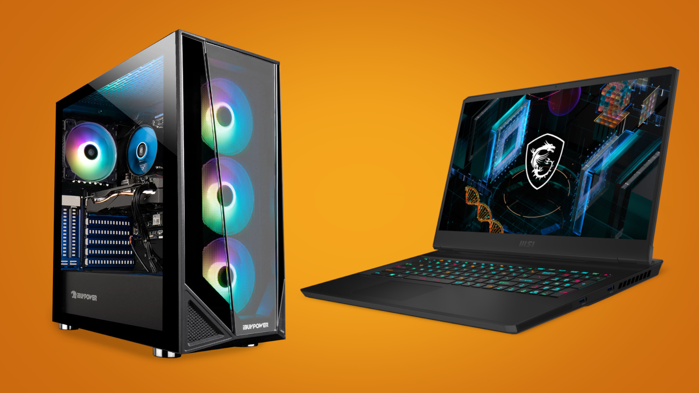

Contar con una buena tarjeta gráfica en tu computadora te permitirá mejorar el rendimiento de tu equipo y tener los mejores gráficos durante tus videojuegos. Por esta razón, todo gamer al momento de buscar una PC o laptop, prioriza un aspecto como las tarjetas de video para decidirse por completo por un modelo. En esta nota del Experto Hiraoka te contamos todo lo que debes saber de la tarjeta gráfica para que puedas sacarle el máximo provecho.
¿Qué es una tarjeta gráfica?
La tarjeta gráfica, también conocida como tarjeta de video, es un componente electrónico que está integrado en la placa base del ordenador, o que también puede instalarse después con la finalidad de aumentar la capacidad del equipo.
Esta tarjeta logra procesar los datos provenientes del CPU y los transforma en información visual en un dispositivo de salida, como un monitor.

¿Para qué sirve la tarjeta gráfica?
La tarjeta gráfica se encarga de procesar aquellos datos provenientes del procesador, entre imágenes y videos que se reproducen en la computadora. Es decir, la tarjeta de video sirve para que puedas disfrutar a lo grande de todos tus videojuegos, así como para utilizar aplicaciones para editar fotografías o videos, como Adobe Photoshop o Adobe Premiere. Últimamente, la tarjeta gráfica también ha sido relacionada con la acción de minar criptomonedas.
Tipos de tarjeta gráfica
Tarjeta gráfica para PC
Si estás pensando en una PC para editar videos u otras tareas que requieren mayor potencia, puedes optar por una tarjeta gráfica dedicada de gama media de Nvidia o AMD
Tarjeta gráfica para laptops
Con las tarjetas gráficas que vienen integradas en las laptops no tendrás problemas para desarrollar con normalidad tus proyectos del trabajo o estudio
Tarjeta gráfica para gamer
Si eres un fanático de los juegos, lo más recomendable es contar con una tarjeta gráfica dedicada de alto rendimiento que te permita disfrutar de gráficos más realistas. Puedes optar por las Nvidia GeForce o las Radeon, así te asegurarás mayor potencia en equipo gamer.

Por ejemplo, con las tarjetas gráficas GeForce RTX Serie 30 de Nvidia podrás disfrutar de la tecnología Ray Tracing, la cual te permite mejorar las iluminaciones, sombras y reflejos de tus videojuegos.
De acuerdo a Nvidia, el Ray Tracing, que en español significa trazado de rayos, llega a simular el comportamiento de la luz en el mundo real. De esta forma, los jugadores se aseguran gráficos más realistas y una experiencia más inmersiva. Esta tecnología fue implementada por Nvidia en sus tarjetas gráficas a finales del 2018.
En la actualidad, son más de 150 juegos e incluso aplicaciones que han implementado el Ray Tracing. Debes saber que todas las Nvidia RTX cuentan con esta tecnología, por lo que las escenas de tus juegos se acercarán mucho más a la realidad.